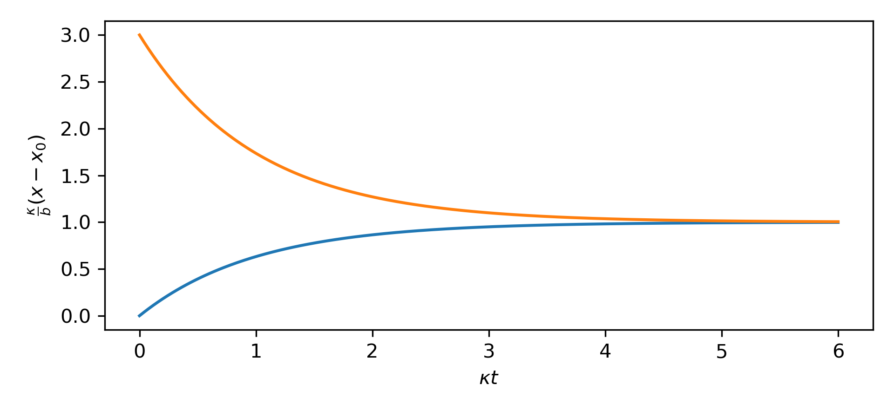

We recently bought an Airthings so I have been geeking out looking at plots of our air quality.
In general, we don't seem to have any issues with our indoor air, except when we use
the stovetop without the exhaust on it will spike our PM2.5 and in general we have
higher CO2 concentrations indoors.
There are four of us in the house, and since we homeschool and I work from
home, there is a lot of CO2 generation happening and I've tried to seal up our
house as well as I can to make it energy efficient.
This got me thinking about how to model the CO2 concentration in our house.
The Model
Let's start with a basic model, we know that we have sources in the form of the
four humans in the house, and that we exchange air with the outside air which
is at something like 420ppm.
This suggests a simple model of the form:
˙𝑥=𝑏−𝜅(𝑥−𝑥0)
Where we use 𝑥 to denote the concentration of CO2, 𝑥0 for the outdoor
concentration of 420ppm, 𝑏 represents the constant source from
the humans in the house and 𝜅 represents an exchange with the outside.
Here we assume that the rate of change is proportional to the difference,
similar in spirit to Fourier's
law. In terms
of our model, this is equivalent to assuming that within some time window, we
replace some fraction of the air in the house with fresh air from outside. To
break it down a bit more, imagine some amount of time Δ𝑡, the change in
the concentation of CO2 inside can be modelled as taking some fraction
𝜅Δ𝑡 of the total air inside and replacing it with fresh air, this
means we decrease the concentration by 𝜅𝑥Δ𝑡 and then increase it
by 𝜅𝑥0Δ𝑡, giving us the form we see above.
I find its easier to formulate a differential equation or physical model in
terms of unitful quantities, but then easier to solve them if we take the time
to non-dimensionalize (which we'll do below).
Here our 𝑥 is in units of ppm by volume, a
dimensionless measure of concentration. We'll imagine our time variable taking
on the units of days for convenience. Then our source term 𝑏 has
units of ppm/day and measures the increase in CO2 concentration the
four of us cause each day within the volume of our house. We could look up this
number and find 900gCO2/day produced per person.1
Estimating Sources
Instead of looking up the number, let's see if we can estimate it. We release carbon dioxide because we respire, our body burns hydrocarbons that we eat to generate energy for our body. Carbohydrates and sugars have an energy density of 4kcal/g which you can verify on the back of your favorite candy bar. The basic chemistry of respiration (and photosynthesis) is the burning of these hydrocarbons:
C𝑛H2𝑛O𝑛+𝑛O2→𝑛CO2+𝑛H2O+energy
If we total up the atomic masses in this formula, we find that for every 30grams of carbohydrates we burn, we release 44grams of carbon dioxide. If we typically eat 2000kcal/day, this works out to 730g/day of CO2 per person, a pretty good match to the numbers you'll find online.
What does this mean for the atmosphere in my house? Well, we have a 2100ft2 home with 8ft ceilings. This gives us:
730g/day2100ft2⋅8ft⋅1.225kg/m3=1300ppm/day
In terms of the mass fraction. However, CO2 concentrations we read about in papers or measure on sensors are volumetric fractions. Carbon dioxide has a molar mass of 44g/mol while natural air is 29g/mol2, so to convert the mass fraction to a volume fraction we need to multiply by 44/29.
In the end, we estimate that each person in my house contributes 1900ppm/day of volumetric CO2 concentration. Outdoor concentrations are 420ppm and my sensor turns yellow when the indoor concentration exceeds 800ppm and red above 1000ppm.
Estimating CO2 conductivity
We've estimated 𝑏, but what about 𝜅, well, this is a measure of how quickly we exchange air in the house. If we close the windows and have the AC occasionally run the fan, it seems like the indoor CO2 concentration will level out at about 1800ppm. Meanwhile, in our model, if we solve for the steady state:
˙𝑥=0=𝑏−𝜅(𝑥−𝑥0)⟹𝑥=𝑥0+𝑏𝜅
and put in our estimates of a steady state value of 1800ppm and
our estimate that for four humans we have 𝑏=4⋅1800ppm/day
we get an estimate of 𝜅=5.5/day. Honestly, this feels low,
I know that most houses are supposed to have about 1 air change per hour,
though here we are discussing specifically CO2 but I would expect the rates
to be the same. I might have to have a blower door test done to see how sealed
up our home is. We live in an older home which I generally expect to be fairly
leaky, but we did some renovations recently and took care to try to seal up
potential leaks. We may have sealed up the house too much and might have to
look into installing something like an Energy Recovery
Ventilation system to
ensure we have fresh enough air.
Then again, we seem to be able to shed our PM2.5, VOCs and other polutants
rather quickly, so perhaps there is just an issue with our CO2 sensor
itself. Regardless, now that we have a model we can go on to solve it.
Non-dimensionalizing
I always find it useful to nondimensionalize differential equations when I'm
solving them. This means reparameterizing the equation to be in terms of only nondimensional quantities.
In this case we'll form a dimensionless measure of the excess concentration, and use our 𝜅 constant to
reparameterize in terms of some relevative time:
To see that the behavior should be a simple exponential relaxation to the steady state.

Figure 1. Two example evolutions of the CO2 given by the model.
In this nondimensional form, it becomes clear that everything is dominated by
𝜅, if we wanted to either change the equilibrium value or get there
sooner, we need to adjust 𝜅, or the air flow rate. If we open a couple
windows and turn on the fans in the house, even with all four of us in here,
the CO2 concentration then settles down at something like 600ppm suggesting that the 𝜅 is now something like 42/day, and
that the CO2 takes about 2/(42/day)≈1hour to
fall.
Would Plants help?
Could we better control our indoor CO2 concentration by having some
houseplants? While plants also respire like we do, they also photosynthesis,
using the sun's energy to run the chemical equation above backward, fixing
CO2 in the air into carbohydrates and sugars.
Unfortunately, as we saw above, what's really important for the chemistry is
essentially the weight of the products. For every 30grams of
carbohydrates we burn we release 44grams of CO2 into the air,
plants go in reverse: for every 30grams of carbohydrates they
synthesize they consume 44grams of CO2 from the air. This
means that if every person in our house is releasing 730g/day of
CO2, we would need 500g/day of sugars being synthesized to
offset each of us. Unfortunately plants do not grow nearly that fast. It
seems most plants grow a couple kilograms a year, let alone a day. We are
unlightly to make a dent in our resting CO2 concentration indoors unless we
turned our house into a relative jungle.
Impact on Earth
To put something like climate change into perspective, we just worked out that
a typical human releases something like 730g/day of CO2 just by
breathing. Granted, this CO2 doesn't tend to increase CO2 atmospheric
concentrations because it came from carbon that very recently was in the
atmosphere itself (before being fixed by our food). Our breathing is
essentially carbon neutral, but let's work out how much humanities collective breathing
compared with atmospheric CO2 concentrations.
As before, we just need to scale up this production by the 8 billion humans on
the planet and then divide by the total weight of the atmosphere, then correct
for the volumetic concetration rather than mass based one.
To estimate the weight of the atmosphere, we know that the 1atm of air pressure at the
surface is caused by the weight of air above us, so the total mass of the atmosphere is roughly:
1atm⋅4𝜋𝑅2𝑔≈5.2×1021g
So we can work out that the relative CO2 concentration from human breathing is:
730g/day5.2×1021g⋅7×109⋅4429≈23ppm/year,
about 0.6ppm/year. Again, human breathing is actually net neutral, but given the magnitude here, it becomes a bit easier to
imagine that human activities and burning of fossil fuels might be contributing 2.47±0.25ppm/year to the atmosphere.3. If we could csomehow sequester all of the CO2 that all of the humans on the planet breathe out, that would only reduce the atmospheric growth rate of CO2 by 25%.
Humanity operates on a truly global scale and we now have very direct influences on the chemistry of the planet.